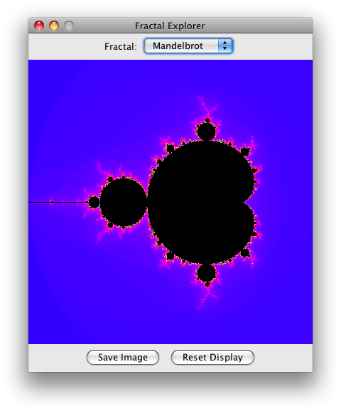
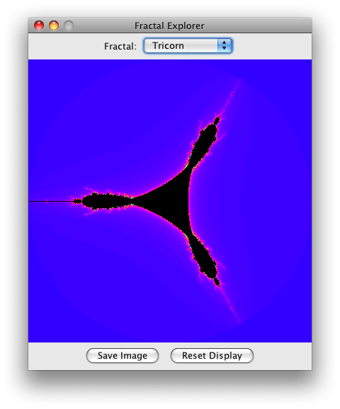
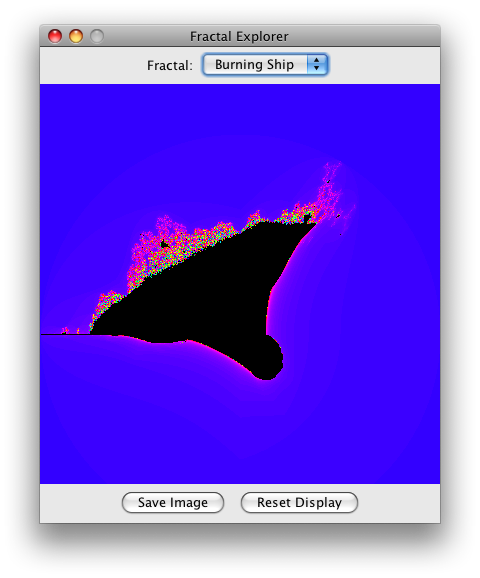

Задание #5. Выбор и сохранение фракталов
На этой неделе добавим две новые функции к программе Fractal Explorer. Во первых, возможность отображения нескольких фракталов и выбор фрактала с помощью выпадающего списка. Во вторых, возможность сохранить текущее изображение фрактала в файл. Вот скриншот новой версии программы:

В верхней части окна программы Fractal Explorer теперь будет два виджета для выбора фрактала, а внизу добавится кнопка "Save" для сохранения текущего изображения фрактала.
Так как теперь имеется несколько источников событий, вы сможете практически изучить вопрос обработки событий от всех этих источников в одном ActionListener в вашем классе.
Поддержка отображения нескольких фракталов
Добавить к Fractal Explorer возможность прорисовки нескольких фракталов довольно легко, в частности потому, что у нас уже есть абстрактный класс FractalGenerator . На этой неделе вам предстоит добавить несколько фракталов к программе, и сделать выбор фрактала для отображения с помощью выпадающего списка. Это очень распространенный "прием” в проектировании пользовательского интерфейса (то есть способ взаимодействия с пользователем часто используемый в различных пользовательских интерфейсах), так что человеку будет легко понять как с ним работать. Программный интерфейс Swing API реализует выпадающий список с помощью класса javax.swing.JComboBox, и этот класс выдает событие ActionEvent при выборе нового элемента. Вот что нужно сделать:
Создайте новые реализации FractalGenerator.
Первая – фрактал треуголка. Сохраните ее в файле Tricorn.java. Как и раньше, следует сделать класс наследник FractalGenerator, и реализация его будет почти такая же, как реализация Мандельброта, за исключением двух отличий. Фактически, вы можете просто скопировать исходный код фрактала Мандельброта, и внести следующие изменения.
Уравнение теперь такое zn = zn-12 + c. Разница только в том, что на каждой итерации вычисляется комплексно сопряженное значение zn-1.Начальный диапазон фрактала треуголка должен быть от (-2, -2) до (2, 2).
Второй фрактал, который надо сделать называется "Горящий Корабль", который в действительности выглядит как горящий корабль. Вот детали его реализации:
Уравнение для вычисления фрактала zn = (|Re(zn-1)| + i |Im(zn-1)|)2 + c. Другими словами, надо вычислять модуль компонента zn-1 на каждой итерации. Начальный диапазон фрактала от (-2, -2.5) до (2, 1.5).
Выпадающие списки Swing могут работать с коллекциями объектов, но объекты должны иметь метод toString(). Не забудьте в каждой реализации фракталов, реализовать метод toString() который возврщает имя фрактала, т.е. "Мандельброт", "Треуголка", и "Горящий корабль".
Вставить JComboBox в интерфейс не составляет труда. Используйте конструктор без аргументов, и метод addItem(Object) для добавления каждой реализации абстрактного класса FractalGenerator. Как уже говорилось в предыдущем параграфе, выпадающий список использует метод toString() объектов генераторов фракталов для отображения их имен.
Добавьте к пользовательскому интерфейсу, перед выпадающим списком, текстовое поле поясняющим роль выпадающего списка. Для этого создайте новый объект JPanel, добавьте в него объекты JLabel и JComboBox, и затем поместите панель в позицию NORTH содержимого JFrame.
Наконец, добавьте обработку событий выпадающего списка к реализации ActionListener. В обработчике следует проверить, что источником события является выпадающий список, и если это так, следует получить из виджета текущий выбранный элемент списка и установить текущий генератор фрактала. (Для этого используйте метод getSelectedItem().) Не забудьте сбросить начальный диапазон отображения фрактала!
Для того чтобы вы могли поверить свою работу, ниже приведены начальные изображения фракталов Треуголка и Горящий Корабль:

Сохранение изображения фрактала
Другая задача этой недели - сохранение текущего изображения фрактала на диск. Это может показаться вам сложнейшей задачей, но Java API имеет средства, существенно ее упрощающие.
Во первых добавьте на экран программы кнопку "Сохранить изображение". Обе кнопки Сохранить и Сброс можно поместить в новый объект JPanel, и затем добавить его в область SOUTH объекта JFrame программы, аналогично тому как раньше вы поступили с текстовым полем и выпадающим списком. (Замечание: не вставьте по ошибке одну и ту же панель в обоих местах, иначе вы получите весьма странный результат!)
Для кнопки Сохранить также надо предусмотреть обработку событий в ActionListener. Кнопки Сохранить и Сброс должны иметь собственные значения команд (например, "save" и "reset"), для того чтобы обработчик мог их различить .
В обработчике кнопки "Сохранить ", надо добавить выбор имени файла в котором будет сохранено изображение! Это можно очень просто сделать с помощью класса javax.swing.JFileChooser. Этот класс имеет метод showSaveDialog(), который вызывает диалоговое окно "Сохранить файл " в котором пользователь может указать имя сохраняемого файла. Методу нужно передать ссылку на объект Component который будет родительским окном диалога выбора файла; это нужно для того чтобы диалог центрировался относительно родительского окна. Подставьте в этот параметр ссылку на объект JFrame.
Метод возвращает значение типа int, которое определяет результат операции выбора файла. Если метод возвращает константу JFileChooser.APPROVE_OPTION, можно продолжить операцию записи файла; иначе, пользователь отменил запрос, и надо просто вернуть управление. Если пользователь выбрал место для сохранения файла, его можно получить через метод getSelectedFile() который возвращает объект типа File.
Надо настроить диалог выбора файла так чтобы он сохранял только изображения PNG; так как это пока единственный поддерживаемый нами формат. Это делается с помощью класса javax.swing.filechooser.FileNameExtensionFilter, вот таким образом:
JFileChooser chooser = new JFileChooser();
FileFilter filter = new FileNameExtensionFilter("PNG Images", "png");
chooser.setFileFilter(filter);
chooser.setAcceptAllFileFilterUsed(false);
Последняя строчка нужна для того чтобы нельзя было ввести файлы с другим расширением ( не ".png").Если пользователь выбрал файл, следующий шаг сохранение изображения фрактала на диск! Это опять могло бы вызвать сложности, но Java снова предлагает для этого готовые функции. Класс javax.imageio.ImageIO предлагает простые операции загрузки и сохранения изображений; можно использовать метод write(RenderedImage im, String formatName, File output). Формат файла будет "png". "RenderedImage" это просто экземпляр класса theBufferedImage и вашего компонента JImageDisplay. (Этот член класса должен иметь модификатор доступа public.)
Конечно, вы обратите внимание на то что метод write() может вызывать исключения, поэтому вы должны поместить вызов этого метода в блок try/catch и обрабатывать потенциальные ошибки. Блок catch должен сообщать пользователю об ошибке с помощью диалогового окна. Для этого в Swing есть класс javax.swing.JOptionPane упрощающий процесс создания информационных диалогов, или диалогов требующих ответа да/нет. В нашем случае, надо использовать статический метод JOptionPane.showMessageDialog(Component parent, Object message, String title, int messageType), с типом сообщения JOptionPane.ERROR_MESSAGE. Сообщение об ошибке можно получить, вызвав метод getMessage() объекта исключения, а заголовок должен иметь смысл, например "Нельзя сохранить изображение". Как и раньше, JFrame должен быть родительским компонентом, для того чтобы диалог правильно центрировался в рамке главного окна.
Закончив работу, опробуйте вашу программу в действии! Теперь вы можете изучить разные типы фракталов и увидеть, как они красивы, вы так же можете сохранить то, что видите на диск. Проверьте ваши обработчики исключений записывая изображения в файлы которые уже существуют на диске или доступны только для чтения, или на устройства доступные только для чтения типа CD дисков. Или попробуйте сохранить файл с именем уже существующего каталога.
Copyright (C) 2015, California Institute of Technology. All rights reserved.